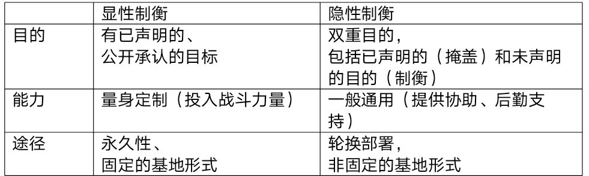
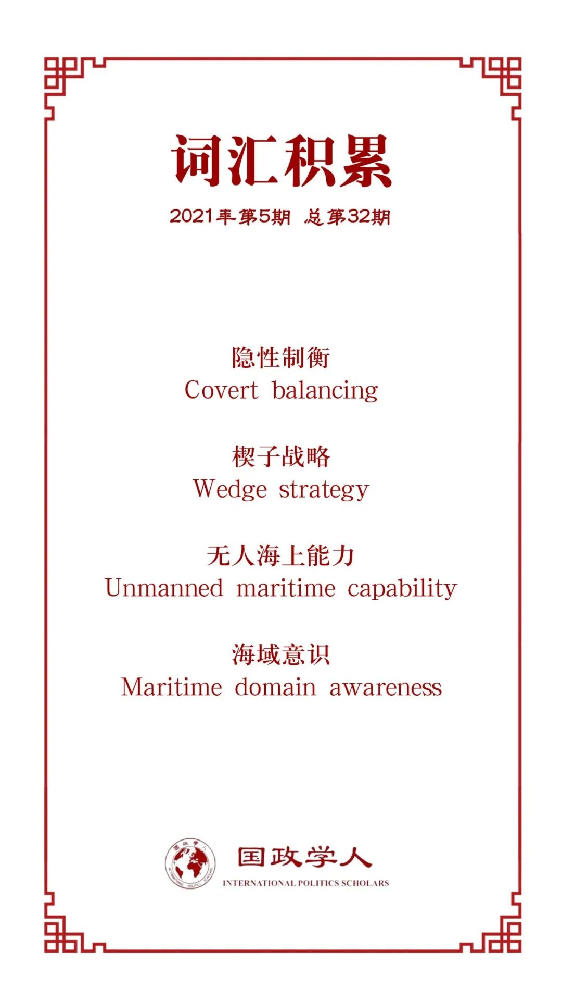

收录于合集

作品简介
【作者】 雨果·迈耶（Hugo Meijer）巴黎政治学院国际研究中心（CERI）研究学者
路易斯·西蒙（Luis Simón）欧洲研究所的研究教授
【编译】 徐一君 成均馆大学政治外交学硕士 国政学人编译员
【校对】 丁伟航
【审核】 阮镇炜
【排版】 韩柯
【美编】 杜丛竹
【来源】 Meijer Hugo, and Luis Simón. “Covert balancing: Great Powers, secondary states and US balancing strategies against China.” International Affairs 97.2 (2021): 463-481.
【归档】 《国际关系前沿》2021年第5期，总第32期。
期刊简介
《国际事务》是国际关系领域的一流学术期刊，也是多学科综合性学术期刊。本刊于1992年由伦敦皇家国际事务研究所查塔姆学院(Chatham House)创立，内容来源广泛，力图囊括业内专家、学术新秀对重点、热点问题的最新思考。2019年期刊影响因子为3.705，在95个国际关系类刊物中位列第4名。
隐性制衡：大国，次要国家和美国对华的制衡战略
Covert balancing: Great Powers, secondary states and US balancing strategies against China
Meijer, Hugo
Luis Simón
文章导读
纵观历史，大国们设计出制衡战略（balancing strategy）以抗衡竞争国的野心，也为此寻求与次要国家间的同盟和安全伙伴关系。然而，在国际关系文献中，次要国家对大国制衡战略施加的影响则被大大低估。与传统观点相反，本文认为，次要国家的偏好在大国制衡战略的塑造中起着关键的促成或约束作用。当次要国家采取对冲策略时，既有大国就受激励，参与所谓的“隐性制衡”（covert balancing）。当既有大国与次要国家的安全合作隐蔽于某种看似与抗衡崛起大国目的无关的“掩盖”之下时，隐性制衡便得以发生，因而即便次要国家继续对冲，依旧产生出某种潜在的制衡力。本文通过研究美国在亚太地区的对华制衡战略来探讨此论点。
01
核心论点
在大国权力竞争的背景下，次要国家通常存在两种选择：既可同既有大国联手抗衡崛起大国，也可选择追随（bandwagoning）崛起大国。针对上述两种情况，既有大国的对策也很直白，即，要么就是利用其与次要国家的关系来抗衡崛起大国，要么就干脆放弃与次要国家的联盟。但是，次要国家也可采取第三种选择“对冲战略”，尤其是在它们感到受崛起大国威胁，同时又对既有大国的制衡能力和制衡意愿抱有怀疑的时候。然而，次要国家的对冲又如何影响既有大国的制衡战略呢？为了填补这一领域的研究空白，本文提出论点， 既有大国通过所谓的“隐性制衡”来对次要国家的对冲做出回应。 对此，本文引入显性制衡（overt balancing）和隐性制衡（covert balancing）这两个概念。
显性制衡与外部制衡（external balancing）的定义相应， 即建立或加强联盟，以抗衡由另一个国家或联盟构成的威胁。至于隐性制衡，则指的是既有大国将其与次要国家的安全合作隐藏于某种掩盖目的（如非传统的安全挑战，或对付另一个次要国家构成的威胁），因而即便在次要国家继续对冲的情况下，依旧产生出某种潜在的制衡力。 在大国与次要国家的安全关系中，显性制衡和隐性制衡在施加杠杆的能力与途径安排方面有所不同。在显性制衡的情况下，大国与次要国家之间安全合作的重点，在于发展威慑或战斗所需的能力，并为抗衡敌对大国而量身定制出某种永久性的安排。相反，隐性制衡则需要发展可用于多种军事意外情况的一般性能力（例如情报，监视和侦察，指挥和控制等），在途径安排上更加灵活轮换。
在次要国家坚持制衡战略时，既有大国可以采取显性制衡。但当次要国家对冲的时候，既有大国的显性制衡战略便受到阻碍，从而转向隐性制衡。隐性制衡使既有大国可绕过因次要国家对冲而存在的约束，利用与该次要国家的安全关系，发展出潜在的制衡力以抗衡崛起大国。若没有这种隐性制衡，则次要国家对既有大国而言将失去战略价值，从而削弱既有大国相对于崛起大国的地位。
02
次要国家的对冲
现有研究文献关于对冲的定义各种各样。梅德罗斯（Medeiros）认为对冲是一个双管齐下的策略，它同时依赖于政治、经济上的“参与和整合机制”以及“以外部安全合作的形式出现的现实主义制衡”。吴翠玲（Evelyn Goh）则将对冲定义为“一种阻止或避免被迫选择一方而明显牺牲了另一方情况的中间立场”。另一个广泛流传的有关对冲的解读，则将其视为政治经济合作政策和安全领域风险管理的结合。作者认为这种定义过于宽泛。由于各国都普遍存在合作与竞争，若以“经济性的参与”结合“安全危机管理”来定义对冲，则对冲行为无处不在。由此，作者主张采取林和库珀（Lim and Cooper）从狭义上的定义： 对冲是次要国家与大国在彼此共享的安全利益范围内出现歧义的一种信号传递。
照此而看，问题不在于给定的次要国家与某一特定的大国是否存在共享的安全利益，而在于这种安全利益关系是否以与其他大国的消极安全关系为前提。若不基于这种前提，则给定的次要国家行为则是对冲。举例来说，韩美虽然是军事同盟，但这种关系的缔结主要旨在遏制朝鲜，而不大关乎韩国在中美之间的站队。事实上，韩国一直坚持同美国的同盟与制衡中国的目的无关。因此，在中美竞争下，尽管韩国是美国的盟友，却被视为是在对冲。此示例说明，给定的次要国家如何在与大国A共享强烈安全利益的同时，仍在大国A和大国B的竞争中进行对冲。
那么，次要国家为何进行对冲呢？根据斯蒂芬·沃尔特的威胁平衡理论（balance-of-threat theory），可以认为，次要国家主要担心本国区域内的威胁平衡，因为这与其安全利益最切身相关。更准确地说，次要国家在感受到崛起大国的威胁，却又不确定既有大国抗衡崛起大国的能力（或意图）时，会采取对冲行动。由此可见，在次要国家的眼中，并非所有大国都是能力相同的。次要国家不确定既有大国是否有能力坚持自己的立场，又由于担心来自崛起大国可能的报复，因此它们避免与崛起大国进行公开的制衡。同时，由于担心被统治，次要国家也不希望协助崛起大国。困局之下，次要国家出于审慎选择对冲。
然而，次要国家的对冲如何影响大国的制衡呢？学者们已经注意到，崛起大国利用楔子战略（wedge strategy）离间分化既有大国与次要国家的安全伙伴关系，预防遏制自身发展的新联盟的形成。相反， 较少有人关注既有大国对次要国家对冲行为的回应， 而这正是本文的关注点，并归结此类回应为隐性制衡。
03
隐性制衡
在与制衡有关的理论概念里，通常分其为内部制衡和外部制衡。前者指一国通过调动国内资源而增强自身军事能力，从而应对他国威胁。后者指一国建立或加强同盟关系，以应对他国威胁。近年来，也有与软制衡（soft balancing）、楔子战略等消极制衡有关的研究出现。其中， 软制衡指的是一国运用诸如国际组织、经济实力或者外交途径等非军事手段来达到制衡目的，而楔子战略则旨在寻求预阻即将形成、又或者破坏已形成的敌对联盟。 然而上述的诸多现有理论中，均并未提及既有大国如何在次要国家采取对冲时，利用已有的安全关系来制衡崛起国。
由此，本文明确地区分两种类型的外部制衡，称其为显性制衡和隐性制衡。显性制衡指的是一国公开承认并出于专门针对某制衡对象国的目的，投资建设联盟或安全伙伴关系。例如冷战期间，美国在欧洲建立联盟体系，以专门制衡苏联。尽管同样地利用联盟和安全关系，但相比之下，隐性制衡的特点在于隐藏其制衡的真正目的。当实施隐性制衡时，既有大国将其与次要国家的安全合作的目的，隐蔽于某种看似与抗衡崛起大国无关的“掩盖”之下，例如称其为“应对非传统安全挑战”，或是“反制来自另一次要国家的威胁”。然而，实际上这类安全合作的结果往往会助其达到制衡目的。
作者进一步指出区别显性制衡和隐性制衡的两个关键维度：能力（capabilities）和途径（access），如表1。在进行显性制衡时，既有大国将为次要国家提供或协助其发展专为制衡崛起大国而设计的能力，从而适合于威慑或战斗（例如战斗机、空中和导弹防御、进攻性战略武器等）。然而，在实施隐性制衡时，既有大国将协助次要国家发展更通用的能力，例如指挥自动化（C2）和智能、监视和侦察系统（ISR），又或是后勤支持，诸如设施购置、建造或维护服务等。而在途径方面，实施显性制衡时通常采取永久性、固定的基地形式，这些基地具有威慑或战斗所需的那种能力（例如，空中，海上和陆地战斗资产，空中和导弹防御能力等）。而在进行隐性制衡时，既有大国将利用“掩护”（例如人道主义援助和救灾，海域意识等）以达到制衡的目的。通常，这些部署都是轮换而非永久性的。
作者不认为崛起大国会采取这种隐性制衡战略。由于崛起大国通常会意识到，现有的地区安全秩序反映了既有大国的利益，所以，它们通常会采取楔子战略来破坏既有大国现有和潜在的联盟与安全关系。因此， 本文主要从既有大国的角度来研究隐性制衡。 尽管次要国家采取对冲战略，但隐性制衡依旧助于其建立抗衡崛起大国的潜力。若没有这种隐性制衡，则既有大国不得不放弃次要国家的潜在制衡价值，进而使自己的地位有所削弱。尽管隐性制衡在发展次要国家的制衡能力方面较之于显性制衡略微低效，但是在具有高度不确定性和次要国家广泛对冲（例如当代亚太地区）的战略背景下， 隐性制衡是既有大国利用次要国家战略制衡价值的最佳（若非唯一）方式。
表1

04
实例分析
（一）越南
从美国的角度来看，中国的崛起让越南的战略价值——其被低估地理位置和能力——得到重新评估。越南的领土与南中国海的大部分并排相傍，尤其是围绕海南省这一中国向南海进行战略投射的主要枢纽部分。越南有着东亚主要的深水港之一——金兰湾（Cam Ranh Bay），以及毗邻金兰湾的适合降落战略轰炸机和重型运输机的机场。此外，越南人口众多，长期以来是东南亚地区潜在的最有能力的次要国家之一。
然而，越南在中美竞争之中依旧保持着较为矛盾的态度。一方面，历史上的敌意加之中国不断扩大的地区影响力，让越南对中国区域竞争前景日益担忧。然而，河内依旧与北京保持着紧密的联系，两国于2013年将双边关系提升为“全面战略合作伙伴关系”这一最高的外交层级。另一方面，越南与美国也有着复杂的关系。两国在交战之后的二十年来未曾有过任何经济、外交联系。此外，越南也对美国的战略信誉存有质疑。因此，即使越南加强了与美国的安全合作，却依旧保留其“三无”政策：无军事同盟，无外国军事基地以及不针对第三方。
从能力方面来看，从2000年代中期开始，华盛顿逐渐扩大并多样化了向越南转让的武器种类、能力建设工作和联合军事演习。除了军售之外，美国也试图通过多种途径提升越南的武装能力。例如在2005年，河内和华盛顿签署协议启动国际军事教育和培训（IMET）计划，当中包括人道主义援助和救灾（HA / DR）能力建设。此外，美国对越的军事援助和能力建设工作也优先强调海上领域，例如协助越南加强其海上指挥自动化（C2）以及智能、监视和侦察(ISR)系统，并帮助越南培训发展无人海上能力（unmanned maritime capabilities）。
从途径方面来看，越南的对冲策略及其“三不”政策大大限制了美国在越南设立基地的选择范围，永久性基地建设完全受阻。例如，从越战结束后的很长一段时间里，美军战舰都无法获准进入金兰湾。直到2016年，越南才向外国军队开放了金兰湾，以容纳来自美、日的（准）航母。河内的对冲策略确实限制了华盛顿利用这种防御关系实现（显性）制衡的能力，却赋予华盛顿施行隐性制衡的动机。当下美国正在与越南建立安全合作伙伴关系，其任务和目的表面上看与中国无关，但在将来可能会被用于制衡,尤其是在HA / DR以及海域意识（maritime domain awareness）领域方面的能力建设。
（二）新加坡
对华盛顿而言，新加坡是提升美国在东亚战略利益的重要资产。它位于马六甲海峡，该处地理位置至关重要，是印度洋和太平洋之间的主要门户，亚洲海上贸易和石油运输的主要枢纽点。然而，出于对地区均势演变的不确定和维护地区稳定的目的，新加坡奉行对冲策略，并避免与华盛顿进行任何可能破坏其与中国关系的合作计划。作为一个被大国包围的贸易中心，该地区的稳定以及自由开放的海上通道对新加坡而言是重要的战略利益。因此，与美国和中国保持牢固和积极的关系是新加坡外交政策的基石。新加坡的这种对冲策略促使美国采用隐性制衡的战略。
从能力上看，华盛顿通过扩大军售和能力建设来提高新加坡的军事能力，并通过联合演习来增强双方的互操作性，以求增强新加坡应对各种安全挑战的能力。例如，美国对新加坡的军售额从2006年的250,000美元增至2016年的26,000,000美元。五角大楼也扩大了能力建设工作，以向新加坡提供“可信的海上防御和巡逻能力”和“促进更强的海域意识”。
从途径上看，自从马尼拉于1991年要求美国关闭苏比克湾海军基地（Subic Bay Naval Base）和克拉克空军基地（Clark Air Base）并从菲律宾完全撤军以来，新加坡已成为美军在东南亚的主要后勤枢纽。在2000年代，新加坡升级了其樟宜海军基地（Changi Naval Base）以容纳美国航母。美新两国于2005年签署了战略框架协议，成为“主要安全合作伙伴”，并加强了在联合军事演习、训练和防务技术等领域的国防合作。美国与新加坡之间“重空间轻基地”（places not bases）的合作方式，既允许美国军方轮流使用设施，又不会使新加坡面临与中国对抗的风险。
译者评述
现有与权力转移过程中崛起国、霸权国以及其他次要国家间行为互动有关的理论研究大多只反映了第一层动态，即当既有霸权国施加制衡时，会导致次要国家采取对冲策略，而崛起国也随之甚至提前采取楔子战略。本文作为对已有相关理论的补充研究，提出了与这三个行为体有关的第二层面的动态互动，即既有霸权国也根据次要国家的对冲反馈来调整自己的行为战略。本文提出的隐性制衡正恰当描绘了当下美国在亚太地区采取的战略行为模式。
鉴于现今东亚地区各次要国家均将对冲战略作为当下应对中美竞争愈演愈烈局势的最佳模式，隐性制衡将极有可能成为美国对华的主要战略方式。美国在亚太地区除了与日、韩、泰、菲、澳等国家保持着军事盟友关系之外，也在不断加强与台湾、越南的军事合作。此前小布什政府时期的美国，因9·11恐怖袭击的缘故，常以提升反恐能力为由训练、调动和运用同盟军事力量，也许可以被隐性制衡的雏形。然而，反恐主题并不与这些亚太地区次要国家行为体们关切的核心战略利益直接相关，难以激发它们的自主积极性，演练规模通常受限，不大可能直接正面针对中国形成包围圈。然而近年来，随着中国崛起后在外交军事上采取越发进取的心态，中国与诸多亚太地区次要国家在海洋划界、领土管理等方面有所冲突，这些冲突往往触及次要国家的核心战略利益。因此，美国便利用此点施展隐性制衡，以“维护海洋自由与开放”等易于掩饰其遏制中国目的的理由，与盟友和伙伴开展军事合作。较之于过去的反恐主题，以提升海洋、领土自卫能力为主题的军事合作对因中美竞争而不安的次要国家们更具吸引力。因此，美国现在所使用的隐性战略较之过去更为有效，既能加强同盟内部的凝聚力，又能保持自身的灵活性，向他国转移对华制衡的压力。
无论是已成型的对华制衡四国联盟（QUAD），还是酝酿之中的对华经济圈包围计划（Economic Prosperity Network），美国利用已有盟友网在安全领域正逐渐收紧对华政策。然而，由于大多数次要国家依旧谨慎观望并采取对冲战略，中国依旧有机会逐一实施楔子战略，分化它们与美国的关系，预阻包围网的形成。自从特朗普登台之后，次要国家便对美国的战略信誉存有疑虑。鉴于下届美国大选亦可能再次选出特朗普式人物，各国很难在短期内完全对拜登政府恢复信心。此外，大部分次要国家也对同盟关系中的连累（entrapment）现象加以防范。因此，对于与中国纠纷较少、对华姿态友好的次要国家，中国应该尽可能减少与其不必要的负面外交事件发生。即便不以离间和分化它们与美国的同盟关系为目的，也至少应确保次要国家继续维持对冲的倾向，而非在中美之间明确站队美国。
词汇整理

文章观点不代表本平台观点，本平台评译分享的文章均出于专业学习之用, 不以任何盈利为目的，内容主要呈现对原文的介绍，原文内容请通过各高校购买的数据库自行下载。
好好学习，天天“在看”
国政学人
支持学术公益与知识传播
微信扫一扫赞赏作者 __赞赏
已喜欢，对作者说句悄悄话
取消 __
发送给作者
发送
最多40字，当前共字
上一页 1/3 下一页
长按二维码向我转账
支持学术公益与知识传播
受苹果公司新规定影响，微信 iOS 版的赞赏功能被关闭，可通过二维码转账支持公众号。